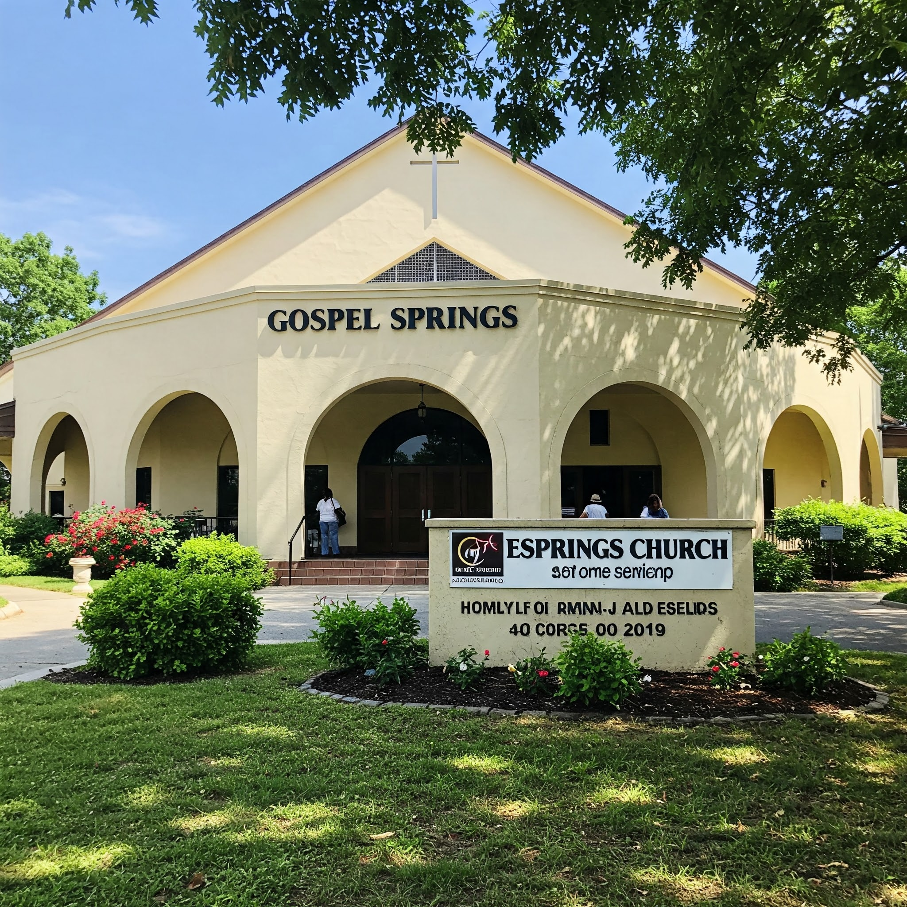

Members
Email
Prayer Requests
Testimonies
Appointments
Bible Study Members
Issues
Pastoral Support
Suggestion box
Communicate
Pastor dashboard
Mentorship
Volunteer opportunities
Manage Communities
Manage Livestream
Livestream support
Manage Events
Manage library
Gospel ministers
ICT messages
Online meeting
Downloads
Resources
Blogs
News
Sermons
Announcements
Notification
App users
Church store
Gospel Springs Mission website dashboard

Welcome to Gospel Springs Mission International
We are a community of faith, love, and hope.